How to progress
New to Forgekin? Follow these steps from your first fight to your first Legendary item.
1. Create your hero (level 1)
- Use the arrows to choose your class: Warrior, Archer, Mage or Priest. Type a name and tap CREATE.
- Your first fight starts on its own, on the first floor of the Endless Tower. Win it and your first skill is yours.
- Not happy with your class? You can change it later in the settings (CHANGE CLASS).
Where to go: CREATE CHARACTER screen, then the Tower.
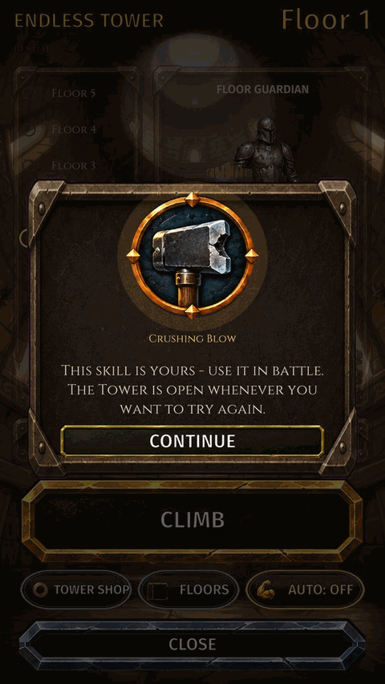
Read more: How a fight looks · Endless Tower
2. Hunt in Adventure
- Open Adventure. Choose the creatures (In turn, or tap one) and tap START: your hero fills the queue and keeps hunting, EVEN WHILE THE GAME IS CLOSED.
- When fights are done, tap COLLECT. CLAIM ALL at the bottom collects every window at once. Loot goes to your bag, EXP to your level.
- When the rewards pool is full you cannot queue new fights: collect first.
- The goal strip at the top of Adventure always shows your next goal.
- Before you close the game, fill the queue: your hero works while you are away.
Where to go: Bottom bar, second tab: ADVENTURE. Once your Hometown opens the tab is called HOMETOWN: tap the EXPEDITION GATE.
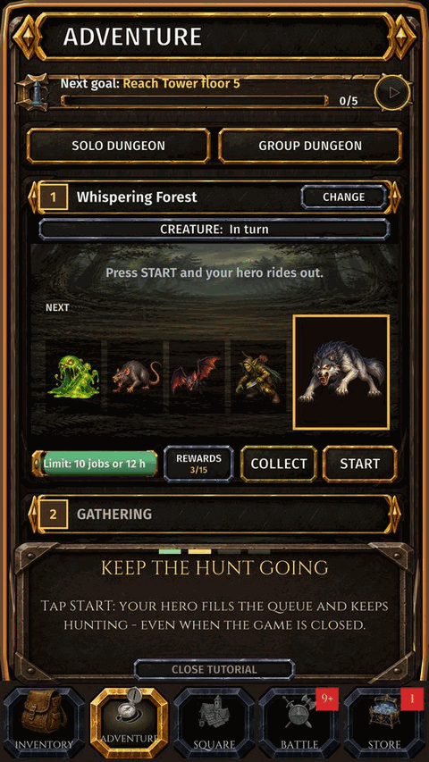
Read more: Adventure · Collecting rewards · Zones and maps
3. Gather from level 2
- At level 2 the GATHERING window opens in Adventure. Pick Mining, Fishing or Herbalism and tap START: your hero mines, fishes and picks herbs on their own.
- Gathering raises that profession's level, not your character level.
- A gathering tool (pickaxe, rod or sickle) makes it faster. Tools drop from creatures.
Where to go: Adventure: the GATHERING window.
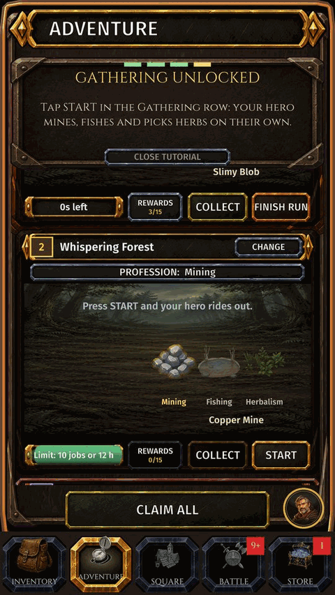
4. Wear better gear
- Gear drops from creatures. In INVENTORY, EQUIP BEST puts on your strongest pieces in one tap.
- Tap any icon to see what it is. The ••• menu of an item holds upgrade, sell and dismantle.
- Wearable gear is not crafted: it drops from creatures and dungeons, or you buy it on the market.
- The HELP CHEST in the Square gives free gear to new players.
Where to go: Bottom bar: INVENTORY (far left).
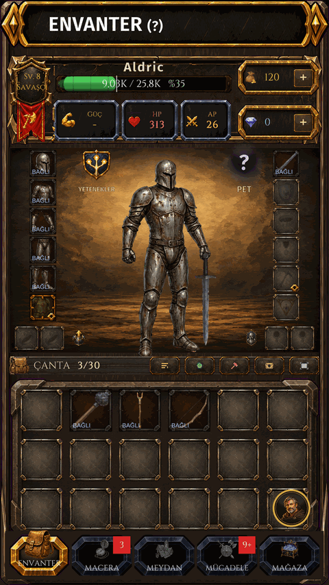
Screen shown in Turkish.
Read more: Inventory and character · Item info · Rarity · Help Chest
5. Daily quests and the Square
- The game opens in the SQUARE. Its signs lead to the Notice Board, Market, Guild, Help Chest and Workshops.
- NOTICE BOARD, DAILY QUESTS: quests advance as you play. GO takes you to the right screen, COLLECT takes the reward. There is a WEEKLY tab too.
- LOGIN CALENDAR gives a reward every day you play.
- Lost? HOW TO PLAY in the settings starts the tutorial again, and most screens have a (?) that explains them.
Where to go: Bottom bar: SQUARE (middle).
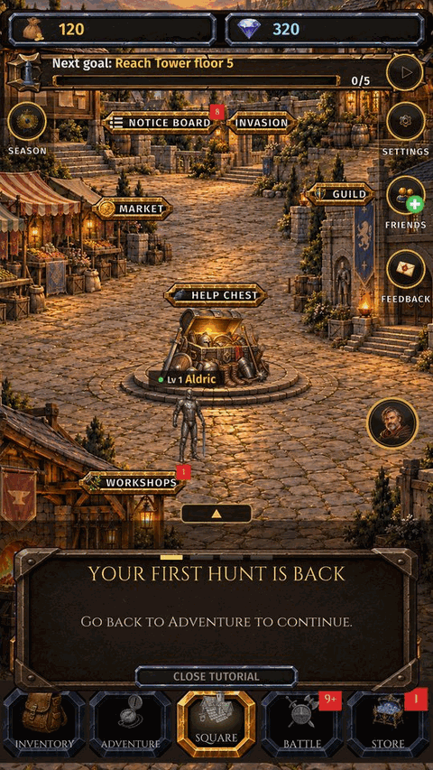
Read more: The Square · Daily quests · Login calendar · Tutorial and how to play
6. Spend your skill points
- You earn skill points as you level up. A badge on SKILLS shows that you have points to spend.
- Each class has its own tree. Rows open as you level up; points open and rank up the skills in them. A maxed active skill can evolve.
- You cannot open everything, so choose a build. RESET SKILLS gives your points back.
Where to go: INVENTORY, then SKILLS (top left of your character).
Read more: Skill tree
7. Professions: gather, process, craft
- Every profession makes another profession's material. Gatherers (Mining, Fishing, Herbalism) bring raw materials, processors (Smelting, Alchemy, Cooking) refine them, crafters (Blacksmithing, Armorsmith, Jewelcrafting, Weaponsmith) finish them.
- Open WORKSHOPS, SELECT PROFESSION, pick a recipe and tap CRAFT. The queue keeps running while the game is closed; COLLECT the products later.
- Missing a material? Tap it and use SHOW RECIPE. CRAFT WITH WHAT YOU HAVE lists what you can make right now.
- Professions make dungeon keys, upgrade stones, repair papers and the materials that raise your gear's rarity.
- In your Hometown, ARTISANS' STREET has a master for each profession: tap one to open their workshop.
Where to go: Bottom bar: SQUARE, then the WORKSHOPS sign.
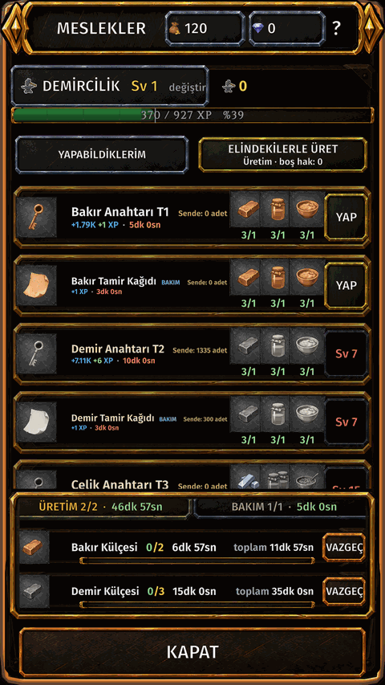
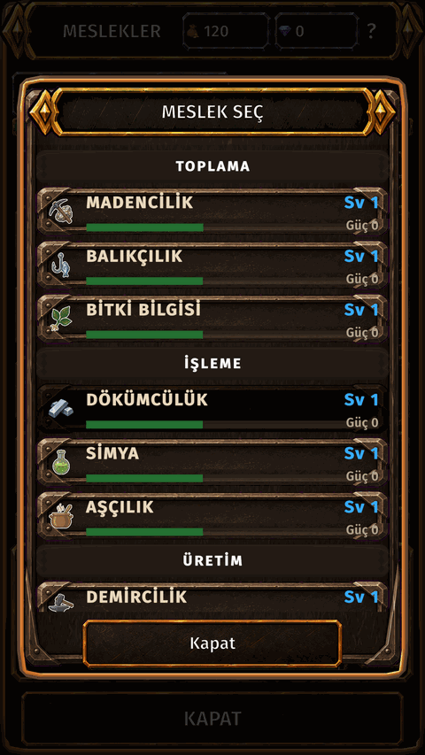
Screen shown in Turkish.
Read more: Workshop · Craft with what you have · Tools
8. From level 5: dungeons, market, arena
- Dungeons drop accessories, Rare gear and dungeon cores. Each dungeon needs a key of its own tier.
- Keys are crafted by Blacksmithing from an ingot, a softening agent and a master meal, or bought on the market.
- Enter from Adventure: SOLO DUNGEON at the top. Play with others in GROUP DUNGEON.
- The MARKET opens: sell what you do not need and buy what you are missing.
- The ARENA opens in BATTLE: fight other players' heroes for arena tokens.
Where to go: Adventure: SOLO DUNGEON. Square: MARKET. Bottom bar: BATTLE.


Screen shown in Turkish.
Read more: Solo dungeon · Party dungeon · Market · Arena
9. Make your gear stronger
- '+' upgrade: upgrade stones raise the '+' level. At high levels a failure can break the item: use a protection stone.
- Upgrade Quality: raise the rarity step by step, Normal to Rare to Epic to Legendary.
- Reroll and runes: roll new bonus stats or imprint the stat you want.
- Dismantle gear you do not need: it gives upgrade stones and essence for all of the above.
- Tier transfer: move a strong Legendary item to the next tier without losing its work.
- Gear wears in fights. A broken item gives no stats: repair it with a repair paper.
- Set bonus: when all your gear, or all your jewelry, is Legendary, you get extra attack and health. Complete both for more EXP and gold.
Where to go: INVENTORY: tap an item, then UPGRADE or the ••• menu.

Screen shown in Turkish.
Read more: Upgrade (+) · Quality upgrade · Reroll and runes · Dismantle · Essence · Tier transfer · Durability and repair · Set bonus
10. Battle modes
- The BATTLE tab is a camp with a sign for each mode: Endless Tower, Arena, Boss of the Day, Ranking, Expeditions and Survival. A locked sign shows the level it opens at.
- The Tower and the Arena give tokens; spend them in their shops in the STORE.
- Expedition and Survival bosses can drop workshop tools.
Where to go: Bottom bar: BATTLE (fourth tab).
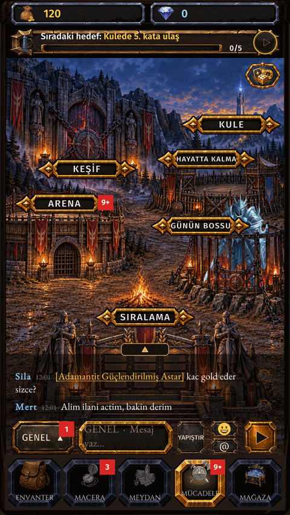
Screen shown in Turkish.
Read more: The Battle screen · Endless Tower · Arena · Boss of the Day · Expeditions · Survival
11. From level 10: join a guild
- Join a guild or found your own. Donate to level it up, fight the guild boss together and shop in the guild shop.
- During a season, kingdoms fight kingdom wars.
Where to go: Bottom bar: SQUARE, then the GUILD sign.
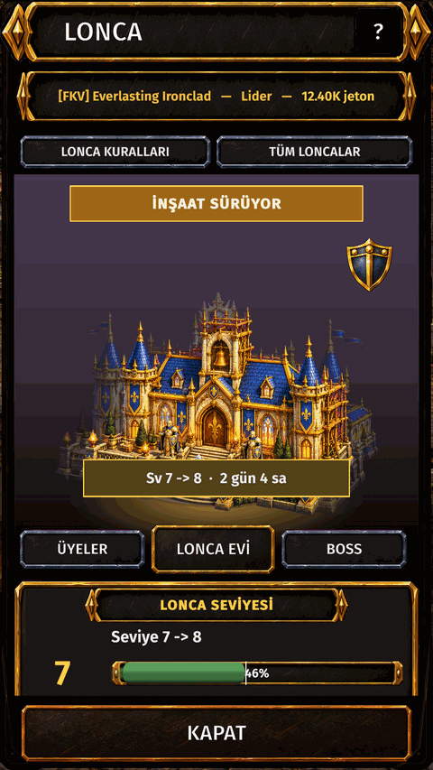
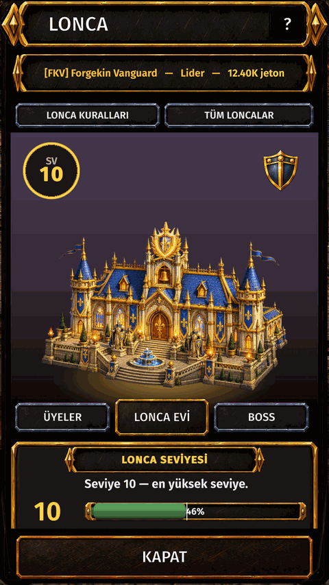
Screen shown in Turkish.
Read more: Guild · Guild boss · Kingdoms
12. Hometown, ship and pets
- Your HOMETOWN: upgrade the PROCESSING and CRAFTING HALL buildings with gold and materials.
- From level 20 the SHIPYARD opens: build a ship and sail to the islands. Island chests hold pet boxes.
- Pets: collect shards to unlock a pet. A companion pet speeds up its own profession; pets do not fight.
Where to go: Bottom bar: HOMETOWN. Pets: INVENTORY, then PET.
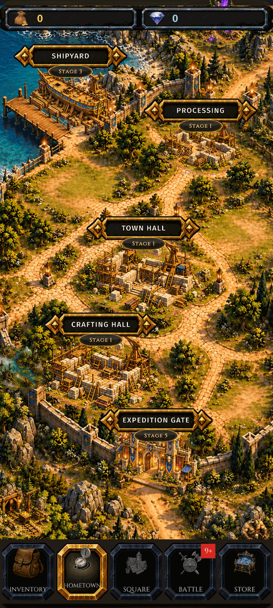
Read more: Hometown · Shipyard and voyages · Pets
What opens when
| Level | Opens |
|---|---|
| Lv 1 | Endless Tower |
| Lv 5 | Arena |
| Lv 5 | First dungeon |
| Lv 5 | Market |
| Lv 8 | Boss of the Day |
| Lv 10 | Found a guild |
| Lv 10 | Kingdom |
| Lv 20 | Shipyard |
Good habits
- Keep the Adventure queue and the workshop queue full before you close the game.
- Collect rewards often: a full pool stops new fights.
- Climb to a new hunting ground only as fast as your gear allows.
- Repair before your gear breaks, and keep a repair paper in your bag.
- Every icon in the game opens its info: tap anything you do not know.
Related
Getting started · Classes · Workshop and professions · Improving gear · Battle modes · Zones